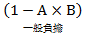
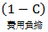
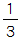

主題精選：市地重劃¶
共收錄 17 篇文章。
1. 三七五耕地因市地重劃及區段徵收而終止租約或註銷租約¶
發布日期: 2026-03-12
內文¶
所謂終止租約，指業佃雙方合意而終止三七五租約。所謂註銷租約，指由政府介入而註銷三七五租約，屬於直轄市或縣（市）政府之行政處分。
• (一) 市地重劃：
- 註銷租約： (1)註銷時機：出租之公、私有耕地因實施市地重劃致不能達到原租賃之目的者，由直轄市或縣（市）政府逕為註銷其租約並通知當事人（平§63Ⅰ）。所稱因實施市地重劃致不能達到原租賃之目的者，指下列情形而言：
• ①重劃後未受分配土地者。
• ②重劃後分配之土地，經直轄市或縣（市）政府認定不能達到原租賃目的者。（平施§89）
• (2) 補償額度：依前項規定註銷租約者，承租人得依下列規定請求或領取補償：
• ①重劃後分配土地者，承租人得向出租人請求按重劃計畫書公告當期該土地之公告土地現值三分之一之補償。
• ②重劃後未受分配土地者，其應領之補償地價，由出租人領取三分之二，承租人領取三分之一。（平§63Ⅱ）
-
終止租約：重劃前訂有耕地三七五租約之土地，如無平均地權條例施行細則第89條所定不能達到原租賃目的之情形者，主管機關應於重劃分配結果公告確定後二個月內邀集權利人協調。協調成立者，應於權利變更登記後函知有關機關逕為辦理終止租約登記（市重§48）。
-
租約存續：上開如協調不成者，應於權利變更登記後函知有關機關逕爲辦理租約標示變更登記（市重§48）。
• (二) 區段徵收：
- 補償方式： (1)限期清理完成—發給抵價地補償： 土地所有權人申請發給抵價地之原有土地上訂有耕地租約者，直轄市或縣（市）主管機關應通知申請人限期自行清理，並依規定期限提出補償承租人之證明文件（徵§41 I）。此屬於終止租約。 (2)未限期清理完成—發給現金補償： 申請人未依前項規定辦理者，直轄市或縣（市）主管機關應核定不發給抵價地。直轄市或縣（市）主管機關經核定不發給抵價地者，應於核定之次日起十五日內發給現金補償（徵§41ⅡⅢ）。發給補償完竣，耕地三七五租約消滅。
• ①補償額度：依法徵收之土地為出租耕地時，除由政府補償承租人為改良土地所支付之費用，及尚未收穫之農作改良物外，並應由土地所有權人，以所得之補償地價，扣除土地增值稅後餘額之三分之一，補償耕地承租人（平§11Ⅰ）。
• ②代為扣交：上開補償承租人之地價，應由主管機關於發放補償或依法提存時，代為扣交（平§11Ⅱ）。
- 註銷租約： 土地所有權人申請發給抵價地之原有土地上訂有耕地租約者，除終止租約外，並得於申請時，請求徵收機關邀集承租人協調；其經協調合於下列情形者，得由地政機關就其應領之補償地價辦理代為扣繳清償及註銷租約，並以剩餘應領補償地價申領抵價地： (1)補償金額或權利價值經雙方確定，並同意由地政機關代為扣繳清償。 (2)承租人同意註銷租約。（平施§74-1）
【註】
-
平：平均地權條例。
-
平施：平均地權條例施行細則。
-
市重：市地重劃實施辦法。
-
徵：土地徵收條例。
注：本文圖片存放於 ./images/ 目錄下
2. 市地重劃前後地價查估¶
發布日期: 2025-08-26
內文¶
政府依法實施市地重劃時，應估計重劃前後地價，請說明該地價之用途為何？在查估重劃前各宗土地地價時，應先調查之土地資料為何？又在查估重劃後各街廓之路線價或區段價時，應參酌那些影響因素估計之？
• (一) 估計重劃前後地價之用途
-
計算公共設施用地負擔之標準 實施市地重劃時，重劃區內供公共使用之道路、溝渠、兒童遊樂場、鄰里公園、廣場、綠地、國民小學、國民中學、停車場、零售市場等十項用地，除以原公有道路、溝渠、河川及未登記地等四項土地抵充外，其不足土地由參加重劃土地所有權人按其土地受益比例共同負擔。
-
計算費用負擔之標準 實施市地重劃時，工程費用、重劃費用與貸款利息由參加重劃土地所有權人按其土地受益比例共同負擔。
-
土地交換分配之標準 重劃區內之土地扣除折價抵付共同負擔之土地後，其餘土地仍依各宗土地地價數額比例分配與原土地所有權人。
-
變通補償之標準 重劃分配結果，實際分配之土地面積多於應分配之面積者，應繳納差額地價；實際分配面積少於應分配之面積者，應發給差額地價。另，應分配土地之一部或全部因未達最小分配面積標準，不能分配土地者，得以現金補償之。
• (二) 查估重劃前各宗土地地價應先調查之土地資料
重劃前之地價應先調查土地位置、地勢、交通、使用狀況、買賣實例及當期公告現值等資料，分別估計重劃前各宗土地地價。
• (三) 查估重劃後各街廓之路線價或區段價應參酌之影響因素
重劃後之地價應參酌各街廓土地之位置、地勢、交通、道路寬度、公共設施、土地使用分區及重劃後預期發展情形，估計重劃後各路街之路線價或區段價。
注：本文圖片存放於 ./images/ 目錄下
3. 市地重劃之辦理方式（舉辦主體）¶
發布日期: 2025-01-07
內文¶
• 一、公辦市地重劃
• (一) 政府主動選定地區辦理辦理市地重劃時，主管機關應擬具市地重劃計畫書，送經上級主管機關核定公告滿30日後實施之。在前項公告期間內，重劃地區私有土地所有權人半數以上，而其所有土地面積超過重劃地區土地總面積半數者，表示反對時，主管機關應予調處，並參酌反對理由，修訂市地重劃計畫書，重行報請核定，並依其核定結果公告實施。(平§56)
• (二) 地主申請優先辦理適當地區內之私有土地所有權人半數以上，而其所有土地面積超過區內私有土地總面積半數者之同意，得申請該管直轄市或縣（市）政府核准後優先實施市地重劃。(平§57)
• 二、獎勵地主自辦市地重劃
為促進土地利用，擴大辦理市地重劃，得獎勵土地所有權人自行組織重劃會辦理之。重劃會辦理市地重劃時，應由重劃區內私有土地所有權人半數以上，而其所有土地面積超過重劃區私有土地總面積半數以上者之同意，並經主管機關核准後實施之。(平§58)
注：本文圖片存放於 ./images/ 目錄下
4. 參加市地重劃或區段徵收之地主於開發完成後分回或領回開發範圍內土地之條件(一)¶
發布日期: 2024-08-22
內文¶
• (一) 市地重劃：
-
重劃區內之土地扣除折價抵付共同負擔之土地後，其餘土地仍依各宗土地地價數額比例分配與原土地所有權人。但應分配土地之一部或全部因未達最小分配面積標準，不能分配土地者，得以現金補償之（平§60-1I）。重劃後土地之最小分配面積標準，由主管機關視各街廓土地使用情況及分配需要於規劃設計時定之。但不得小於畸零地使用規則及都市計畫所規定之寬度、深度及面積（市重§30）。
-
土地所有權人重劃後應分配土地面積已達重劃區最小分配面積標準二分之一，經主管機關按最小分配面積標準分配後，如申請放棄分配土地而改領現金補償時，應以其應分配權利面積，按重劃後分配位置之評定重劃後地價予以計算補償（市重§53II）。
-
同一土地所有權人在重劃區內所有土地應分配之面積，未達或合併後仍未達重劃區內最小分配面積標準二分之一者，除通知土地所有權人申請與其他土地所有權人合併分配者外，應以現金補償之；其已達重劃區內最小分配面積標準二分之一者，得於深度較淺、重劃後地價較低之街廓按最小分配面積標準分配或協調合併分配之（市重§31I②）。
-
土地所有權人重劃後應分配土地面積未達重劃區最小分配面積標準二分之一而不能分配土地時，主管機關應於重劃分配結果公告確定之次日起六十日內，以其重劃前原有面積按原位置評定重劃後地價發給現金補償（市重§53I）。
綜上，參加市地重劃之地主於開發完成後分回開發範圍內土地之條件只有一個，即「重劃後地主應分配土地面積已達或合併後已達重劃區最小分配面積標準二分之一」。
【附註】
①平：平地地權條例。 ②市重：市地重劃實施辦法。 ③徵：土地徵收條例。 ④徵施：土地徵收條例施行細則。 ⑤區徵：區段徵收實施辦法。
注：本文圖片存放於 ./images/ 目錄下
5. 市地重劃與都市計畫之關係¶
發布日期: 2022-03-31
內文¶
都市計畫分為主要計畫與細部計畫二種。前者就大項公共設施（如主要道路、大型公園、批發市場等）予以規劃配置，以作為都市發展之架構。後者就小項公共設施（如次要道路、里鄰公園、零售市場等）予以規劃配置，以作為實施都市計畫之依據。
市地重劃為一定地區之土地整體開發。土地開發過程須依據細部計畫配置公共設施。因此，先有細部計畫，始有市地重劃。
市地重劃與都市計畫之關係，現行規定如下：
• (一) 選定之重劃地區尚未發布細部計畫或其細部計畫需變更者，應於完成細部計畫之擬定或變更程序後，再行辦理重劃。但選定重劃之地區，其主要計畫具有細部計畫之內容者，得先依主要計畫辦理重劃，以配合擬定細部計畫（市重§9）。
• (二) 重劃區內都市計畫規劃之街廓無法符合重劃分配需要者，得於不妨礙原都市計畫整體規劃及道路系統之前提下，增設或加寬為八公尺以下巷道。前項增設或加寬之巷道，主管機關應於重劃分配結果公告確定後，通知有關機關依法辦理都市計畫細部計畫變更（市重§28ⅠⅡ）。
• (三) 重劃前供公共通行之既成巷道或私設巷道應予保留者，視為增設巷道，並依上開規定辦理。但該巷道如兼具法定空地性質者，應按重劃前原位置﹑面積分配予原土地所有權人，不計算其重劃負擔，並得配合重劃工程同時施工（市重§28Ⅲ）。
〈註〉市地重劃實施辦法，簡稱「市重」。¶
注：本文圖片存放於 ./images/ 目錄下
6. 市地重劃與區段徵收之公告禁止¶
發布日期: 2021-09-02
內文¶
• (一) 市地重劃公告禁止土地、建物變動
根據平均地權條例第59條：
-
重劃地區選定後，直轄市或縣(市)政府，得視實際需要報經上級主管機關核定後，分別或同時公告禁止或限制左列事項：
-
土地移轉、分割或設定負擔。
-
建築改良物之新建、增建、改建或重建及採取土石或變更地形。
-
前項禁止或限制之期間，不得超過一年六個月。
• (二) 區段徵收僅公告禁止建物變動
根據土地徵收條例第37條：
-
區段徵收範圍勘定後，該管直轄市或縣 (市) 主管機關得視實際需要，報經上級主管機關核定後，分別或同時公告禁止建築改良物之新建、增建、改建或重建及採取土石或變更地形。
-
前項禁止期間，不得超過一年六個月。
當初土地徵收條例第37條立法說明：「按平均地權條例第53條第3項規定，有關區段徵收範圍選定後之禁止事項，尚包括土地移轉、分割、設定負擔等事項，基於保障被徵收土地所有權人之權益，減少其土地參加區段徵收時所受到之限制，土地徵收條例本條未將該等事項列為禁止事項。」
因此，顯示區段徵收係刻意排除土地變動之公告禁止事項。¶
注：本文圖片存放於 ./images/ 目錄下
7. 市地重劃與區段徵收有關土地增值稅負擔之比較¶
發布日期: 2020-10-08
內文¶
市地重劃與區段徵收乃政府土地開發之兩種重要手段。惟兩種法律性質迥然不同，前者為視為其原有之土地交換，後者為強制徵收。從其法律性質而衍生之土地增值稅負擔因而有別，比較如下：。
• (一) 市地重劃：土地所有人以原有土地換得新的土地。因新的土地視為其原有（平§62），無取得可言，亦無移轉可言，故不徵土地增值稅。又，原地價照舊（指由重劃前原地價換算為重劃後原地價，以下同），不徵土地增值稅之效果，等同不課徵土地增值稅。區段徵收：土地所有人失去原有土地，再取得新的土地（即抵價地）。因區段徵收而失去土地，免徵土地增值稅（土稅§39-1Ⅱ）。
• (二) 市地重劃：土地所有人所領回之土地，乃延續其原有土地，因此原地價照舊。原地價照舊，表示原地價未更動，故屬於不課徵土地增值稅。區段徵收：土地所有人所領回之土地（即抵價地），屬於原始取得，而非延續其原有土地。因此，須對新的土地另訂原地價，原地價以實際領回抵價地之地價為準（土稅§30-1③）。
• (三) 市地重劃：市地重劃後第一次移轉，其土地增值稅減徵40%（土稅§39Ⅳ）。惟市地重劃後，配偶間相互贈與再移轉第三人，雖屬第二次移轉，但稅法有明定其例外（土稅§28-2Ⅱ），故仍得適用減徵40%之優惠。區段徵收：區段徵收後第一次移轉，其土地增值稅減徵40%（土稅§39-1Ⅱ）。惟區段徵收後，配偶間相互贈與再移轉第三人，因屬第二次移轉，且稅法無明定其例外，故不得適用減徵40%之優惠。
綜上，市地重劃不課徵土地增值稅，且所領回新的土地之原地價照舊；因原地價照舊，日後出售於第三人之土地增值稅較多。區段徵收免徵土地增值稅，且所領回新的土地之原地價採實際領回抵價地之地價；因原地價重新認定，而且較高，日後再出售於第三人之土地增值稅較少，甚至為零。由此可知，就土地增值稅負擔而言，土地所有人參加區段徵收較參加市地重劃有利。¶
注：本文圖片存放於 ./images/ 目錄下
8. 公有土地參加重劃，是否須依土地法第25條規定經行政院核准始得處分？¶
發布日期: 2020-02-20
內文¶
各位同學好
今日專欄說明有關「公有土地參加重劃，是否須依土地法第25條規定經行政院核准始得處分？」
首先，土地法第25條規定：「直轄市或縣(市)非經該管區內民意機關同意，並經行政院核准，不得處分或設定負擔或為超過十年期間之租賃」
公有土地參加重劃，是否須依土地法第25條規定經行政院核准始得處分，此問題主要在於所謂的「處分」意涵為何？
所謂處分係指基於土地所有權人自己之意思，使權利發生變更之行為。公有土地之處分如非屬公有土地管理機關以自己意思使權利發生變更之處分行為，參照司法院第232號解釋，當無土地法第25條之適用。因此，公有土地參加依平均地權條例第五十八條之土地所有權人自行組織重劃會辦理市地重劃，其實質意義與主管機關依同條例第五十六條辦理市地重劃，而將公有土地核定屬重劃區範圍予以重劃同，係為實現憲法平均地權之政策而設，並非土地所有權人以自己之意思使權利發生變更之處分行為，自無土地法第二十五條之適用。¶
注：本文圖片存放於 ./images/ 目錄下
9. 原始取得或繼受取得-市地重劃¶
發布日期: 2019-08-01
內文¶
各位同學好
本日專欄針對有關原始取得或繼受取得之觀念予以釐清。
首先，土地所有權之取得，按照取得性質可分為原始取得與繼受取得，前者不繼受前手權利瑕疵，亦即土地上所有負擔因原始取得而歸於消滅；後者繼受前手權利瑕疵，亦即承受他人土地之原有負擔。
至於常有同學直接將市地重劃歸類為繼受取得，可能需要再將情形再予細分，方才精準。其實，市地重劃包含了原始取得與繼受取得：
- 市地重劃後土地所有權人領回土地＝繼受取得市地重劃後，重行分配與原土地所有權人之土地，自分配結果確定之日起，視為其原有之土地(平§62)。重劃前土地已設定他項權利而於重劃後分配土地者，主管機關應於辦理土地權利變更登記前，邀集權利人協調，除協調結果該權利消滅者外，應列冊送由該管登記機關按原登記先後轉載於重劃後分配之土地(平施§91)。其意涵係原土地所有權人對於重劃後所分配之土地，其權利義務乃延續重劃前之土地，亦即重劃前權利負擔仍存續於重劃後分配土地上，故屬於繼受取得。
2. 市地重劃後政府取得抵費地＝原始取得市地重劃之抵費地，政府於重劃後取得，應屬原始取得。某地主雖原為其所有權人，亦喪失其所有權，系爭地上物之占有系爭土地，即成無權占有。(參最高法院85年台上字第2642號民事判決)¶
注：本文圖片存放於 ./images/ 目錄下
10. 市地重劃禁限之例外¶
發布日期: 2018-11-22
內文¶
各位同學好
經紀人考試剛考完，這次的土法與土稅申論題，考得較複雜，尤其第一題考市地重劃實施辦法較細之規定，因此，今日專欄為各位同學講解今年經紀人考試土法第一題有關「市地重劃禁止與限制」之內容：
首先，重劃地區選定後，直轄市或縣(市)政府，得視實際需要報經上級主管機關核定後，分別或同時公告禁止或限制下列事項：1.土地移轉、分割或設定負擔。2.建築改良物之新建、增建、改建或重建及採取土石或變更地形。該禁止或限制之期間，不得超過一年六個月。其立法目的是為防止重劃地區選定後，土地所有權人復有移轉、分割土地或增建、改建建築物，而阻礙重劃工作之進行，影響重劃成果之分配。
然而，惟根據市地重劃實施辦法規定，下列事項非屬公告禁止或限制事項：
-
土地繼承登記。
-
建物及其基地登記。
-
因抵繳遺產稅土地所有權移轉國有登記。
-
因強制執行、土地徵收或法院判決確定，申請登記。
-
共有土地因實施耕者有其田部分徵收放領，辦理持分交換移轉登記。
-
申請剩餘財產差額分配登記。
-
抵押權讓與登記。
-
實施重劃本身所必要之作業。
其概念是因為上述這些登記不妨礙重劃分配與施工（第2、8款）、屬於法律事實依民法759於登記前即以取得權利（第1、4款）、有利於地籍正確性與登記（第3、5、6、7款）。¶
注：本文圖片存放於 ./images/ 目錄下
11. 市地重劃權利清理¶
發布日期: 2018-11-14
內文¶
各位同學好
不動產經紀人考試即將於本週末上場，加油再加油！希望大家考運亨通，有看都有考！
由於考題趨勢越來越著重概念理解與案例應用，故今日專欄提供一案例題，除了是經紀人考試的重點外，其他考科同學也應予準備！
[案例題]
甲於某市地重劃預定區內有四塊土地如下：
-
A地於80年租給乙建屋
-
B地於70年租給丙耕作，並有去公所辦理租約登記
-
C地於85年設定抵押權給丁
-
D地於99年設定地上權給戊（存續期間70年、每年租金10萬）
試問該區於107年公告辦理市地重劃時，甲所有土地上之權利該如何清理？
• (一) 重劃後如能達原設定或租賃目的
重劃前土地已設定他項權利而於重劃後分配土地者，主管機關應於辦理土地權利變更登記前，邀集權利人協調，除協調結果該權利消滅者外，應列冊送由該管登記機關按原登記先後轉載於重劃後分配之土地。
• (二) 重劃後如未能達原設定或租賃目的
• A. 地
因重劃而不能達到原租賃之目的者，承租人乙得終止租約，並得向出租人甲請求相當一年租金之補償。
• B. 地
因實施市地重劃致不能達到原租賃之目的者，由直轄市或縣（市）政府逕為註銷其租約並通知當事人。依前項規定註銷租約者，承租人丙得依下列規定請求或領取補償：
-
重劃後分配土地者，承租人丙得向出租人甲請求按重劃計畫書公告當期該土地之公告土地現值三分之一之補償。
-
重劃後未受分配土地者，其應領之補償地價，由出租人甲領取三分之二，承租人丙領取三分之一。
• C. 地
地上權因市地重劃致不能達其設定目的者，該權利視為消滅。地上權人戊得向土地所有權人請求相當之補償。原則上，該補償係以該剩餘期間及租金作為請求依據。
• D. 地
土地建築改良物經設定抵押權，因市地重劃致不能達其設定目的者，各該權利視為消滅。並依下列方式處理：
- 甲有另行分配土地：抵押權人丁得向土地所有權人甲請求以其所分配之土地，設定抵押權或典權。
2. 甲未另行分配土地：實施重劃未受土地分配者，丁原設定抵押權之權利價值，由重劃機關在不超過土地所有權人甲應得補償之數額內予以協調清理。¶
注：本文圖片存放於 ./images/ 目錄下
12. 抵價地、抵費地¶
發布日期: 2018-11-08
內文¶
各位同學好
今日專欄為各位整理與提醒區段徵收與市地重劃有關抵價地、抵費地之差異：
• 一、定義
• (一) 抵價地：區段徵收應給予之補償地價，得由土地所有權人申請以規劃整理後可供建築之土地，按土地所有權人應領補償地價比例折算抵付。
• (二) 抵費地：實施市地重劃時，重劃區內土地所有權人應行負擔之工程費用、重劃費用及貸款利息，由該地區土地所有權人按其土地受益比例共同負擔，並以其未建築土地折價抵付。
• 二、差異
• T. ABLE_PLACEHOLDER_1¶
注：本文圖片存放於 ./images/ 目錄下
13. 自辦市地重劃有關發起人申請核定成立籌備會之要件¶
發布日期: 2018-04-03
內文¶
司法院於民國105年7月29日公布釋字第739號解釋，針對「獎勵土地所有權人辦理市地重劃辦法」部分條文宣告違憲。內政部遂於民國106年7月27日修正該辦法，其中有關發起人申請核定成立籌備會之要件說明如下：
• (一) 修正前之獎勵土地所有權人辦理市地重劃辦法第8條第1項前段規定：自辦市地重劃應由土地所有權人過半數或七人以上發起成立籌備會，並由發起人檢附範圍圖及發起人所有區內土地所有權狀影本，向直轄市或縣(市)主管機關申請核定。
• (二) 司法院釋字第739號部分解釋文：獎勵土地所有權人辦理市地重劃辦法第八條第一項發起人申請核定成立籌備會之要件，未就發起人於擬辦重劃範圍內所有土地面積之總和應占擬辦重劃範圍內土地總面積比率為規定；於以土地所有權人七人以上為發起人時，復未就該人數與所有擬辦重劃範圍內土地所有權人總數之比率為規定，與憲法要求之正當行政程序不符。
• (三) 修正後之獎勵土地所有權人辦理市地重劃辦法第8條第2項規定：發起成立籌備會，應以發起人人數逾擬辦重劃範圍土地所有權人總數十分之三，及其於該範圍所有土地面積合計逾該範圍土地總面積十分之三之同意行之。
附帶一提的是，司法院釋字第739號解釋文提及：「平均地權條例第五十八條第三項規定，尚難遽謂違反比例原則、平等原則。」亦即平均地權條例第58條第3項規定：「重劃會辦理市地重劃時，應由重劃區內私有土地所有權人半數以上，而其所有土地面積超過重劃區私有土地總面積半數以上者之同意，並經主管機關核准後實施之。」未違憲。¶
注：本文圖片存放於 ./images/ 目錄下
14. 市地重劃屬於繼受取得或原始取得？¶
發布日期: 2018-01-11
內文¶
各位同學好
今天專欄來談談市地重劃後分配土地，究竟屬於繼受取得還是原始取得呢？
這個問題精準一點的話，要注意可能兩者都有：
• (一) 繼受取得市地重劃後，重行分配與原土地所有權人之土地，自分配結果確定之日起，視為其原有之土地(平§62)。重劃前土地已設定他項權利而於重劃後分配土地者，主管機關應於辦理土地權利變更登記前，邀集權利人協調，除協調結果該權利消滅者外，應列冊送由該管登記機關按原登記先後轉載於重劃後分配之土地(平施§91)。其意涵係原土地所有權人對於重劃後所分配之土地，其權利義務乃延續重劃前之土地，亦即重劃前權利負擔仍存續於重劃後分配土地上，故屬於繼受取得。
• (二) 原始取得市地重劃政府取得之抵費地，屬於原始取得。參考「最高法院85年台上字第2642號民事判決」系爭土地既為市地重劃之抵費地，花蓮縣政府於重劃後取得，應屬原始取得。上訴人雖原為其所有權人，亦喪失其所有權，系爭地上物之占有系爭土地，即成無權占有。¶
注：本文圖片存放於 ./images/ 目錄下
15. 參加市地重劃分回土地面積與參加區段徵收分回土地面積之比較¶
發布日期: 2017-11-23
內文¶
土地所有權人參加市地重劃分回土地面積之計算方法詳如市地重劃實施辦法第29條附件。土地所有權人參加區段徵收分回土地面積之計算方法詳如土地徵收條例施行細則第50條附件。二者之公式頗為複雜，常困擾學生，因此筆者將其公式簡化，以利學習。
• (一) 市地重劃：參加市地重劃，原所有權人應負擔之項目，包括臨街地特別負擔、一般負擔及費用負擔等三項。實施市地重劃時，原所有權人應分配面積之計算方法簡化如下：
-
重劃前後宗地地價上漲率(A)=[圖片1]
-
重劃區一般負擔係數(B)=[圖片2]
-
重劃區費用負擔係數(C)=[圖片3]
-
各宗土地重劃後應分配之面積(D)=[重劃前原有之宗地面積×[圖片4]－臨街地特別負擔]×[圖片5]
• (二) 區段徵收：土地徵收條例第44條第1項第1款規定，被徵收土地所有權人領回抵價地之面積，由該管直轄市或縣（市）主管機關按其應領地價補償費與區段徵收補償地價總額之比率計算其應領之權利價值，並以實際領回抵價地之單位地價折算之。準此，實施區段徵收時，假定區段徵收範圍內無農地重劃區，原所有權人領回抵價地面積之計算方法簡化如下：
-
全區預計抵價地面積=全區之徵收土地總面積×抵價地比例（40%~50%）
-
預計抵價地總地價=Σ規劃供抵價地分配之各分配街廓面積×各該分配街廓評定之單位地價
-
區內各原土地所有權人領回抵價地之權利價值=[圖片6]
-
各原土地所有權人領回抵價地之面積=[圖片7]
• (三) 比較：
-
市地重劃分配土地之概念，係先就重劃全區面積扣除公共設施用地負擔與費用負擔後，再按地價比例分配給各原所有權人；因此，市地重劃屬於政府與地主共同開發土地，地主分擔公共設施用地及重劃費用，並分享開發利益。區段徵收分配土地之概念，係先就徵收全區土地乘以抵價地比例，再按徵收補償地價比例分配給各原所有權人；因此，區段徵收一方面地主失去土地，另一方面地主分享土地開發與地目變更之利益。
-
市地重劃分回土地之計算公式較合理。區段徵收分回土地之計算公式中，有關抵價地比例(現行規定40%~50%)欠缺理論根據，失之武斷。
-
市地重劃分回土地最少55%，區段徵收分回土地最少40%，最多50%。故市地重劃分回土地較多，區段徵收分回土地較少。
-
實施市地重劃，地主分回土地只享有土地開發之漲價利益，未享有地目變更之漲價利益。實施區段徵收，地主分回土地享有土地開發與地目變更之雙重漲價利益。
-
市地重劃分回土地較多，但開發後土地漲價較少，漲價主要來自於土地改良，故較無暴利存在。區段徵收分回土地較少，但開發後土地漲價較多，常有暴利存在；暴利主要來自於地目變更，因而滋生官商勾結、炒作土地。
文章圖片¶


16. 黎明自辦市地重劃案例探討¶
發布日期: 2017-09-21
內文¶
各位同學好
自辦市地重劃今年才剛修法，今日專欄再次針對爭議不斷的台中單元二黎明重劃區進行討論。
[案例爭議]
本案源於台中市黎明自辦市地重劃區，面積約一八六公頃，為「擬定台中市都市計畫（整體開發地區單元二）細部計畫」指定以市地重劃方式整體開發之地區，其都市計畫細部計畫劃設交通用地，面積約8.2公頃（下稱系爭非共同負擔公共設施用地），非屬平均地權條例第60條規定共同負擔之公共設施用地，經（自辦）重劃會以抵費地指配於該用地，並將原土地所有權人調配於住宅區。
簡單而言，非法定10項公共設施用地（上課提到國、道、綠、廣），如交通轉運站用地，其土地該如何處理？
依現行規定，依序為：
-
公有土地優先指配（平均地權條例第60條第2項）
-
抵費地指配（市地重劃實施辦法第34條第1項）
-
如有不足時再按私有土地面積比例予以分配（市地重劃實施辦法第34條第1項）
此順序主要是考慮保障土地被劃為10項公共設施以外的土地所有權人，可以盡量分到可建築土地，避免分到不能用的公共設施用地。
但內政部後來函釋：「市地重劃區內非共同負擔之公共設施用地，如公有土地不足指配，又原地主自願切結放棄其調配之權利，主張仍分配予原位置時，應以尊重原土地所有權人之意願為優先考量，不得以抵費地強行指配。」也就是內政部認為，應先詢問地主意願，如果不願意被調配到其他地方，而願意原地分配的話，仍以原地分配。也就是不需要按照上面法律規定的1(公有優先指配)→2(抵費地指配)→3(原土地所有權人分配)順序，而是變為1→3→2。
然而，後來監察院認為內政部這個函釋有牴觸與逾越現行法令，更創設現行法令有關市地重劃指配公共設施用地相關規定所無之事項之問題等。
[論述參考]
最後，依陳明燦老師的文章，提出以下建議：
-
從法條文義解釋：「重劃區內公有土地與抵費地均不足以指配作為非共同負擔公共設施用地」之前提要件下，始得將非共同負擔公共設施用地配予（回）原土地所有權人。
-
從平等原則考量：主管機關應不得將非共同負擔之「公共設施用地」配予同一重劃區內之一部份土地所有權人；而其他土地所有權人則得配回「可建地」，蓋此舉將使市地重劃之實施失去正當性，亦違反旨揭「平等對符原則」，而無法達成重劃區內公共設施用地「公有化」之目的，而使後續土地開發事務受到不利影響。
-
從行政效率考量：此一非共同負擔之公共設施用地（例如本案系爭交通用地）遲早須進行開發建設，則因已成為「私有」，主管機關勢須再為一次「取得」，倘無法經由協議價購等方式取得者，則土地徵收一途似無法避免，必生爭議，勢必延宕其開發時程而降低其行政效率。
-
視公共設施類型應有不同處理：公共設施用地之種類應得分為「鄰趨性」（如公園）與「鄰避性」（如變電所）兩大類。此外，亦得區分為（功能）「單一性」（如學校）與「多目標性」（如本案交六用地）。由於多目標性公共設施深具開發之「誘因」，從而乃為重劃區內原主所努力爭取之目標，但其得依據如促進民間參與公共建設法等特別法（相較於都市計畫法而言）進行土地開發者，倘將之配予重劃區內原土地所有權人，則易滋生旨揭疑義。從而，對於此類具有「多目標（功能）」性質之非共同負擔公共設施用地，建議不應劃入市地重劃範圍內，以符重劃之原理。
參考資料：陳明燦，2013，我國自辦市地重劃非共同負擔公共設施用地指配相關法制問題分析—兼評監察院一○二年四月十二日院台內字第一○二一九三○四一二號函¶
注：本文圖片存放於 ./images/ 目錄下
17. 終止三七五租約補償承租人之地價標準¶
發布日期: 2017-09-14
內文¶
依平均地權條例第77條規定，出租耕地經依法編為建築用地，出租人得終止租約，並按申請終止租約當期之公告土地現值減除預計土地增值稅後餘額三分之一補償承租人。即：承租人之地價補償=（公告土地現值−預計土地增值稅）×[圖片1]
上開公式在下列狀況發生變化：
• (一) 市地重劃：補償規定於平均地權條例第63條，即：
-
重劃後出租人受分配土地：承租人之地價補償=公告土地現值×[圖片2]
-
重劃後出租人未受分配土地：承租人之地價補償=補償地價×[圖片3]
土地重劃之法律性質乃視為其原有之土地交換，故不徵土地增值稅，因此公式中未出現預計土地增值稅。
• (二) 土地徵收：補償規定於平均地權條例第11條，即：
承租人之地價補償=（補償地價−土地增值稅）×[圖片4]
土地徵收有實際補償地價，故不採公告土地現值。值得一提的是，現行土地徵收採市價補償，而非採公告土地現值補償。另，土地徵收係課徵土地增值稅之時機，故採實際發生土地增值稅，而非採預計土地增值稅。又，現行土地徵收免徵土地增值稅，因此上開公式之土地增值稅為零。
綜上，終止三七五租約補償承租人之地價標準，端視下列二種情形而定：
-
有無補償地價：有補償地價，以補償地價為準；無補償地價，以公告土地現值為準。
-
有無土地增值稅：有土地增值稅並同時發生，以實際發生土地增值稅為準；有土地增值稅但尚未發生，以預計土地增值稅為準；無土地增值稅，則刪除公式中之土地增值稅規定。
文章圖片¶
